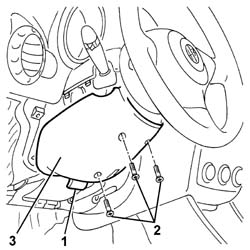
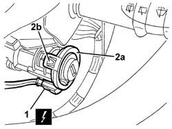

5580E08 AERIAL FOR ALPHA CODE - R R
- Path
- Procedures > 55 ELECTRICAL EQUIPMENT > 5580 SPECIAL ACCESSORIES > 5580E ANTI-THEFT DEVICE > 5580E08 AERIAL FOR ALPHA CODE - R R
- Kind
- repair procedure (removal / refitting; the operation number is the code)
- Applies to
- all engines; all production periods
- Interactive page
- https://sloeber94.github.io/elrnDB-aGt/en/#/125001739
Applies to: all engines; all production periods
 Removing
Removing
 Refitting
Refitting1. If necessary, adjust the steering wheel height adjustment lever.
2. Undo the bolts securing the lower trim.
3. Remove the lower trim by disengaging from the lower retainers and steering wheel

Applies to: all engines; all production periods
1. Disconnect the electrical connection.
Name | Connector | |
|---|---|---|
1 | Aerial for CODE | See P91 AERIAL FOR FIAT-CODE |
2. Release the aerial (2a) from the starter releasing the retainers (2b).

Applies to: all engines; all production periods
Refitting
RemovingCheck that the aerial is not damaged.
Fit the aerial on the ignition lock barrel.
Connect the electrical connection.
Fit lower trim and do up the retainers.
Tighten the bolts.
Restore the steering wheel to the appropriate position.
Connect the battery.
Check the operation of the system using the Examiner or another tester.